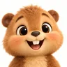
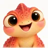
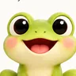
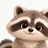

01
Hook
0:00–0:05 · 5 s
Ketkout · Kitchen
- On screen
- The take full screen, with its own sound: the chick lifts the last jar, it slips,
Oh no, not the last jar!
- Voice-over
- (from 0:02.5)
Made in one open-source app.
- On-screen text
- MADE IN ONE OPEN-SOURCE APP · picture and sound: LTX-2.5
- Into the next
- Hard cut on the jar's thump.
02
The promise
0:05–0:13 · 8 s
- On screen
- The banner turns; the pointer runs along the seven tiles: Kitchen, Mixer, Jam, Macaron, Spice, Toaster, Utensils.
- Voice-over
This is Comfyture, an open-source Higgsfield: seven studios on one engine, built on the Comfy Developer Platform.
- On-screen text
- COMFYTURE · 7 STUDIOS · 1 ENGINE · MIT
- Into the next
- The Kitchen tile zooms in.
03
Kitchen
0:13–0:27 · 14 s · four rooms, 3.5 s each
Ketkout · the head chef

- On screen
- The Great Jam Chase through the four rooms in film order, Kitchen's room bar lighting each in turn.
- Voice-over
Kitchen writes the story from one sentence, blocks it on a 3D stage, rolls each shot with LTX-2.5, picture and sound together, and cuts the film.
- On-screen text
- KITCHEN · STORY → STAGE → SHOT → CUT
- Into the next
- The header switches to Toaster (its yellow underline slides).
- Note
- Captured again on 25 October on a fresh install: The Great Jam Chase is Kitchen's shipped example (D6), the film a new user finds featured on Kitchen's home. Nothing was copied from a private data folder.
04
Toaster
0:27–0:39 · 12 s

Crumpet · the model maker- On screen
- Typing to Crumpet; the clay set builds itself piece by piece, each action ticked; then the shipped example's Render page; its clay frame wiping into the finished still; (if approved) the turnaround and the GLB turning in its well.
- Voice-over
In Toaster, Crumpet builds a set in clay from one sentence. Toast it into a picture, then into a real 3D model.
- On-screen text
- TOASTER · CLAY → RENDER → 3D MODEL
- Into the next
- The 3D model spins out of frame.
- Note
- The build is staged: Crumpet's answer was written by hand on a lab server (no model, no credits), in a new draft beside the example, and the page checked it and built the scene from it as it would from a real one; with no key, Toast it reads "GPU time". The example's three stills were drawn with GPT Image (free, through Codex) and the page says so: for the open-weights category either re-toast them with Qwen Image 2.1 (a few credits, your yes) or keep the model labels out of frame.
05
Spice
0:39–0:51 · 12 s

Paprika · the VFX house- On screen
- Roto's matte flashes (SAM3); in FX a spark portal is dragged from the library, scaled and turned by its handles; Comp: the wipe slides; Export · free.
- Voice-over
Spice is a VFX house in the browser: six departments, SAM3 roto, a layer compositor, and a final bake that costs nothing.
- On-screen text
- SPICE · PLATE · ROTO · PAINT · LIGHT · FX · COMP
- Into the next
- The comp wipe carries across into Jam.
06
Jam
0:51–1:01 · 10 s · the otter sings the last 4 s

Pickle · the band leader- On screen
- The track plays; its sections and beats light up as it goes; then Taro sings, full frame, with his own sound and no voice over him.
- Voice-over
- (0:51–0:57)
Jam turns a song into a music video. The beat is read right in your browser.
- On-screen text
- JAM · SONG → BEAT → LIP-SYNC
- Into the next
- Cut on a beat.
- Note
- Captured on 25 October on a fresh install: Moonlit Oolong Walk is the video Jam opens first, with its words timed to the vocals and its finished film (both could stand in for the otter's close-up). Never the Toc Toc or Hotel Lobby showcases: they play commercial recordings.
07
Mixer
1:01–1:09 · 8 s
Praline · the trend boss
- On screen
- The shelf; a role handed to Meringue; Meringue's take, vertical, muted.
- Voice-over
Mixer remakes a trend with your cast: the crew, your pet, or you.
- On-screen text
- MIXER · A TREND, YOUR CAST
- Into the next
- A vertical swipe, like a feed.
08
Macaron
1:09–1:15 · 6 s
Brioche · the brand room
- On screen
- The kit (palette, logos, rules), then the week's posts in three formats.
- Voice-over
Macaron keeps a brand's kit and makes its posts on brand.
- On-screen text
- MACARON · BRAND KIT → POSTS
- Into the next
- The header switches.
09
Utensils
1:15–1:21 · 6 s

Truffle · the shelf keeper- On screen
- Truffle's shelf; a tool opens; the Library of official workflows scrolls.
- Voice-over
Utensils shelves one-job tools and all the official ComfyUI workflows.
- On-screen text
- UTENSILS · ONE JOB EACH · 691 OFFICIAL WORKFLOWS
- Into the next
- Cut to black.
10
What's new, and why
1:21–1:35 · 14 s · three hard cuts
- On screen
- Three claims, one shot each, the on-screen line changing on each cut.
- Voice-over
What's new? Each pet acts through checked tool calls and never spends without your yes. Clay becomes control maps. And what you preview is the free final render.
- On-screen text
- PETS ACT THROUGH CHECKED TOOL CALLS · NOTHING PAID WITHOUT A YES / CLAY → CONTROL MAPS / THE PREVIEW IS THE FINAL RENDER, FREE
- Into the next
- The diagram builds from the left.
- Why this beat
- Most Innovative:
Demo video must explain why the submission is innovative.
11
How it's built
1:35–1:45 · 10 s · open weights, LTX-2.5 at the core
Drawn
- On screen
- The diagram; the model wall; the account panel with the switch on.
- Voice-over
Built on the Comfy SDK, Cloud and Router. Open weights by default, with LTX-2.5 making picture and sound in one pass.
- On-screen text
- OPEN WEIGHTS BY DEFAULT · LTX-2.5 AT THE CORE · also: three.js, ffmpeg, Blender MCP, Claude Code and Codex, GPT Image for the cast
- Into the next
- A terminal types.
- Why this beat
Any other tools, models, or techniques … must be explained in your demo video
, and the form askshow you built it
.
12
Run it yourself
1:45–1:51 · 6 s
Crumpet · the tour
Drawn
- On screen
- The terminal; the app opens; the compass starts the tour; the account panel's Comfy Cloud / Your ComfyUI switch.
- Voice-over
Clone it, and every example runs free. Add a key, or your own GPU.
- On-screen text
- GIT CLONE … · NPM INSTALL · NPM START
- Into the next
- The tour card slides away.
- Note
- Every product has its tour now (eight, one per pet, each on its own example); this one ran on Toaster's shipped example on a fresh install. Any of the others can stand in.
13
Call to action
1:51–1:55 · 4 s
Drawn
- On screen
- The end card holds for the last 4 seconds.
- Voice-over
Comfyture. Open source. Come cook.
- On-screen text
- GITHUB.COM/SHAINYXYZ/COMFYTURE · #OPENSOURCEHIGGSFIELD
- Into the next
- Fade out.